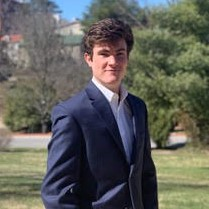

Our Team
Grainger Reeves
Grainger is a rising senior at Washington and Lee University. He has spent two summers as a business analyst at biomedical technology firm BioIQ and one summer in private wealth management and investments at Raymond James Financial. In his free time, Grainger enjoys the outdoors, sports, reading and writing, and art.
Majors: Business Administration, Romance Languages
Hometown: Atlanta, Georgia
Rob Dee
In his spare time, Rob is a bass singer in four distinct choirs. He enjoys running, hiking, and trading options. His investing background is in Technology, and also specializes in currencies and commodities. Additionally, he used to own and operate a GPU cryptocurrency mining operation. This summer he will be working at Suntrust Robinson Humphrey as an Equity Research Analyst.
Major: Business Administration
Hometown: Ridgewood, New Jersey
Quinn Cahill

Quinn is a rising senior at W&L and is one of the presidents of the Club Lacrosse team at school and a group head in the Real Estate Society. He is a huge fan of the New York Islanders and strongly dislikes Boston sports teams.
Major: Business Administration, Philosophy Minor
Hometown: Fairfield,, Connecticut
Luke Alli
Luke has a passion for understanding how things work whether that's computer programs, airplanes, or mental strategies. He is the co-founder of a storage and hauling business for W&L students and is a member in the Williams Investment Society. Luke likes to read books about science fiction, history, and military strategy. In his free time, he likes to code, workout, get outdoors, and discuss philosophy. After graduation, Luke looks to serve as an officer in the Marine Corps.
Majors: Computer Science, Accounting, Philosophy Minor
Hometown: Catonsville, Maryland
Jack Curtis
Jack grew up and still presides in the historic New England town of Fairfield, CT. He attended Fairfield Warde High School where he was a 4 time letter winner and senior captain in both Football and Lacrosse. Curtis was selected with multiple all-conference nods as a Running Back and Defenseman. He is also the Technology Group Head of the prestigious Williams Investment Society at Washington & Lee which manages in excess of $14 million of the University's endowment. Curtis leads GenCap's investment account and helps facilitate macroeconomic forecasting as the Chief Economist. His interests and hobbies include alpine skiing, American history, politics, hiking, technology, fitness, Football, and Lacrosse.
Major: Economics
Hometown: Fairfield, CT
Jack Kannapell
Jack is a rising senior at W&L. He is a huge fan of D.C. sports especially the Capitals. Additionally he is the founder of the roller hockey team at W&L. In his free time he loves to watch Will Ferrell movies. Upon graduation, he is looking to pursue a career in Investment Banking.
Major: Business Administration, Mathematics Minor
Hometown: Bethesday, Maryland
Curtis Mitchell
Curtis comes from a big, competitive family and loves sports. On campus, he plays basketball and is a 2-time ODAC Defensive Player of the Year. He is also a member of Kappa Alpha, where he served as Vice President and is a huge DC sports and UVA basketball fan. He plan on going into investment banking and will be interning at Piper Sandler in the Industrial Group this upcoming summer.
Major: Business Administration
Hometown: Chevy Chase, Maryland